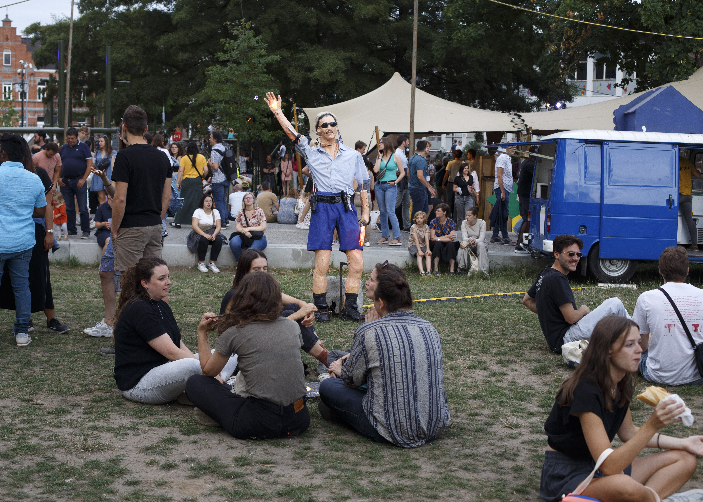

ROBIN VERSLEGERS

ABOUT CONTACT CV SELECTED WORKS INDEX

T-shirt made for the 'Lochness T-shirt Project', fabric, acrylic paint, 2023

Installation consisting of 4 sculptures, made together with Sybren Janssens at Baudelo Park during Gentse Feesten, 2023, with the support of SplinterVZW, Trefpunt and the city of Ghent

Sybren Janssens and Robin Verslegers before they got famous, series of 22 photographs of us hiding in plane sight at work, 2023

KONGJAK - DOOM LOOP/MEMORY PARASITE, EP music release, 2021.

Nouveau City Architects Dendermonde, Installation, 2023

DOOM LOOP: FENCE OPERAS [ENIGMATIC MOTIFS] in collbrolation with CC:Chances in Chaos, part of the group exhibition Trauma and Care at BANGKOK CITYCITY GALLERY, 2021

DOOM LOOP: FENCE OPERAS [ENIGMATIC MOTIFS] in collbrolation with CC:Chances in Chaos, part of the group exhibition Trauma and Care at BANGKOK CITYCITY GALLERY, 2021

GEOMETRY OF THE DELUSIONAL LAYER ON THE BONE, Dye-sublimation print on fabric, thread, ropes, metal, rocks, 2m x 2m

DOOM LOOP: SYSTEM PARASITE at CTM Festival: Hacklab at Studio 1–Kunstquartier Bethanien, Berlin, (DE)

RootTech™—Installation view, 2018, Subcore-flex 1-10, On the floor: RT Exclusive Seat 14-07-61, Left: Wall Text, Subcore-flex—Product Description.

RootTech™—Subcore-Flex #1, 2018, Proportion 16:9, Glass 55”

RootTech™—Zone Merchandise, 2018, 3M HyperReflective Long Sleeve Tee Red/Black, RT_11061861/10061861.jpg


RootTech™—Installation view, EyeTech RT–NO.2, 2018, Motion sensory detection

RootTech™—Installation view, Factory/Archive Room, 2018, 8-Channel sound installation, 16:9 greenhouse, LED lights, sound, fog machine

RootTech™—Installation view, Factory/Archive Room, 2018, 8-Channel sound installation, 16:9 greenhouse, LED lights, sound, fog machine

RootTech™—CyberTech Café, Live Sound Performance Voranat Voraphitak with Tanat Teeradakorn

DOOM LOOP: NATIONAL COLORATION COMPLEX/SYSTEM PARASITE in collbrolation with Fire Lotus, 2021

DOOM LOOP: NATIONAL COLORATION COMPLEX/SYSTEM PARASITE in collbrolation with Fire Lotus, 2021

DISRUPTIVE OPERATION/KONGJAK PROCESSING ROOM Curatorial project and Performance/Online Live-streaming, 2021.

DISRUPTIVE OPERATION/KONGJAK PROCESSING ROOM Curatorial project and Performance/Online Live-streaming, 2021.

DISRUPTIVE OPERATION/KONGJAK PROCESSING ROOM Curatorial project and Performance/Online Live-streaming, 2021.
~~~


SELECTED WORKS INDEX